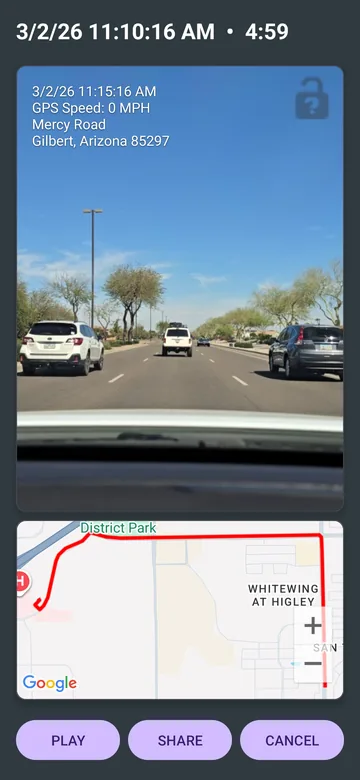
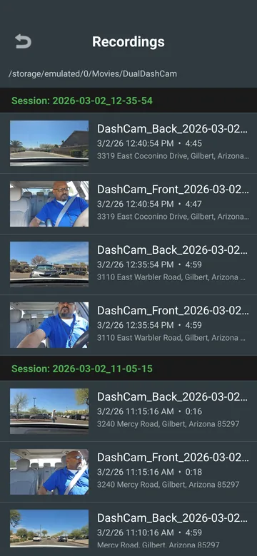
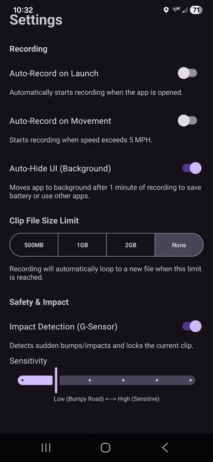

◉
Road + cabin coverage
Capture the road ahead and cabin interior when your device supports dual-camera operation.
Drive with video proof from both angles
Turn your phone into a protection-focused dash cam. Record the road and cabin, preserve trip details, detect impacts, and share important clips when proof matters.
Protection-focused recording
Guardian supports real driving situations where accidents, passenger safety concerns, disputes, or unexpected road events benefit from clear video evidence.
Capture the road ahead and cabin interior when your device supports dual-camera operation.
Record speed, street information, date, time, and location-based trip details.
Impact detection helps lock important moments so they are easier to locate after an incident.
Loop recording and automatic cleanup help reduce device storage use during long drives.
Recordings and trip data remain on your device unless you choose to share them.
Send important clips to an insurance agent, law enforcement, or a trusted contact when needed.
Actual app screens
Review playback, organized recordings, and recording controls from the app.



Use the mobile device you already carry to keep road and cabin documentation close at hand.